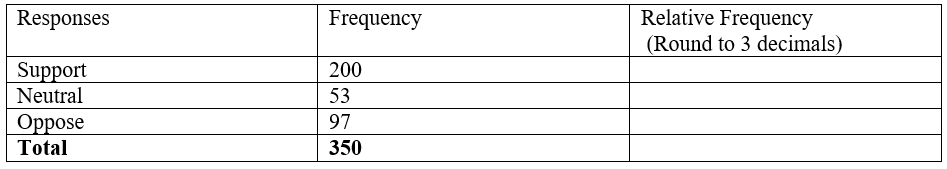
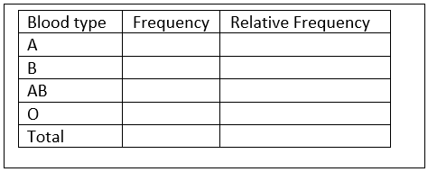
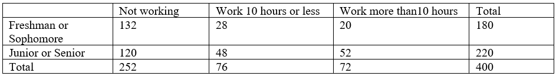
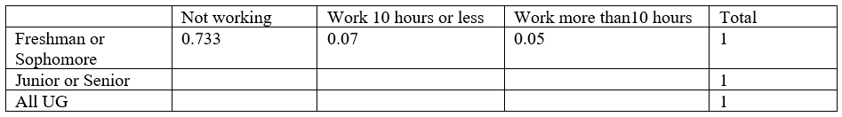
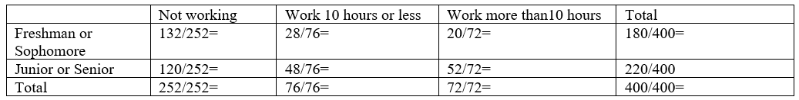
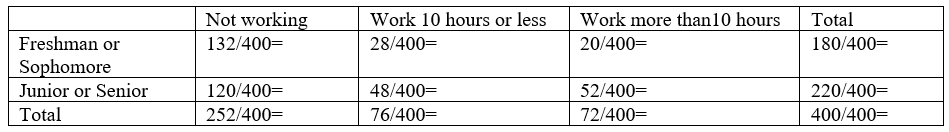

Chapter 5 Examining Categorical Data
5.1 Quick Review:
- Tables
- Frequency of a category – the count of that category
- Relative Frequency of a category = \(\frac{\text{Frequency in the category}}{\text{Total number of observations}}\)
- Table (of one variable) – shows the list of values and the corresponding frequencies (or relative frequencies) of one categorical variable
- Contingency table—presents a summary (of counts or proportions) of two categorical variables bivariate variables
- Computing row and column proportions for contingency table
- Bar plots
- Bar plot of one variable – visualizes the frequencies (or relative frequencies) of one categorical variable
- Bar lots for two categorical variables – put side by side bar plots
- Stacked bar plot – stack bars over (using different colors)
- Mosaic plot – is a special type of standardized stacked bar plots that represents a contingency table. In detailed words, it shows the percentage of one categorical variable (variable 1) for all categories of another variable (variable 2); can use the width of each bar to represent the ratio of variable 2)
- Using side by side Box plots for exploring categorical-numerical relationships which provide information about how the distribution of the numeric variable changes across categories.
5.1.1 R codes (table and bar plot)
- Create a table — use table()
Variable_Name = c ("category 1", "Category 2", …, "Category n") (Note: use quotation marks for strings – categories)
table(Variable_Name)
- Create Bar plot – (sample from course notes)
# Create a data frame with the Variable_Name
Variable_Name <- data.frame(
Type = c("category 1", "Category 2", …, “Category n"),
Frequency = c( f1,f2, …, fn) # f1,f2, …,fn are frequencies
# Create a bar plot
barplot(Variable-Name$Frequency, names.arg = Variable-Name$Type,
main = "Frequency of Variable-Name",
xlab = "Type of Variable", ylab = "Frequency",
col = "blue", border = "black", )
5.2 Exercises
5.2.1 Exercise 1
A survey polled a sample of 350 students for a proposed change of some regulations. The following table summarized the survey response result.

(a). How many support the proposed change?
(b). Fill the last column in the table.
(c). What is the percentage of the sampled students who opposed the proposed change?
5.2.2 Exercise 2
The following data is the recorded blood types of 30 volunteers who donated blood at a plasma center.
O O A B A A B O AB O
B A O A AB O B A B B
O O O A A B O B A A

(a). Summarize the data in a frequency table and calculate the relative frequencies.
(b). Draw a histogram for the frequency of the data.
5.2.3 Exercise 3
Four hundred undergraduate students were surveyed about their part time working hours during on semester. The following contingency table summarizes the survey result related to student status and working hours per week.

(a). Complete the table for the 2nd row, 3rd row proportions (relative frequencies by class, and overall)
(Divide the 2nd row, 3rd row of the table by 220, by 400)

(b). Find the column proportions. Interoperate the meaning the ratios of 2nd, 3rd, and 4th columns

(c). Find the overall relative frequencies by dividing all by 400 (grant total) Interoperate the meaning of each.
